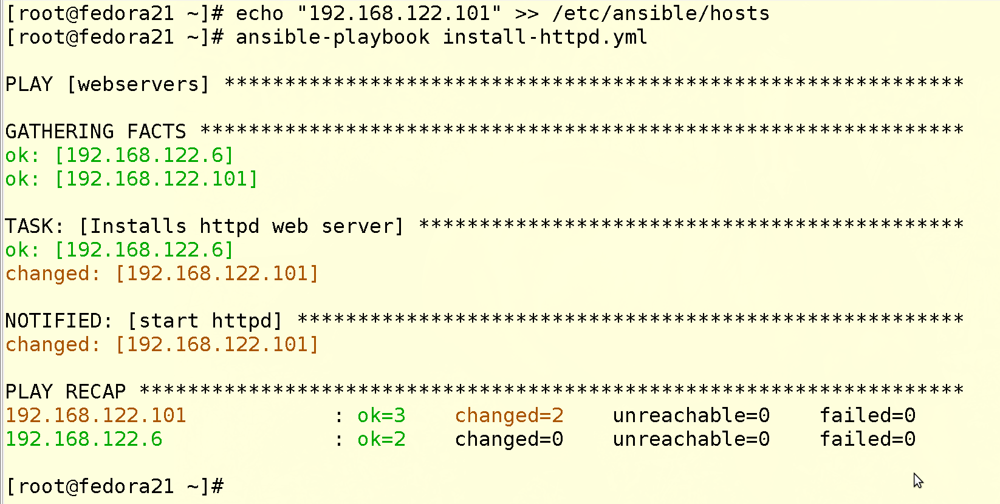
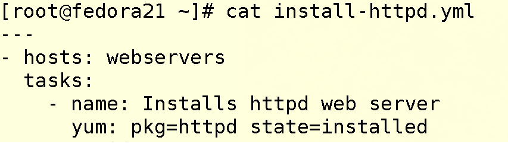
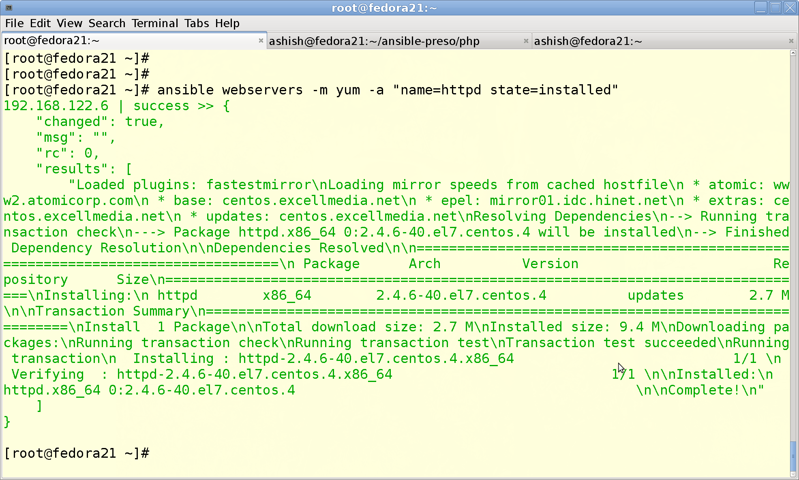
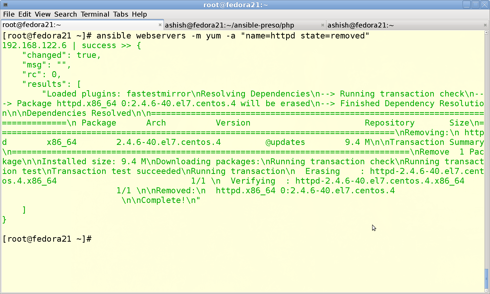
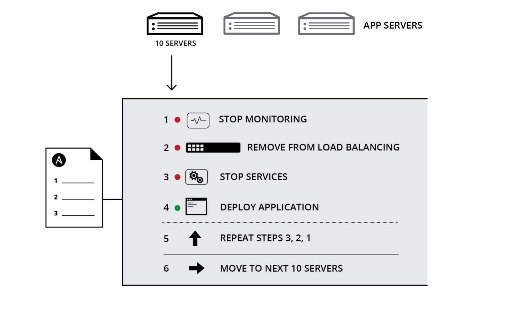
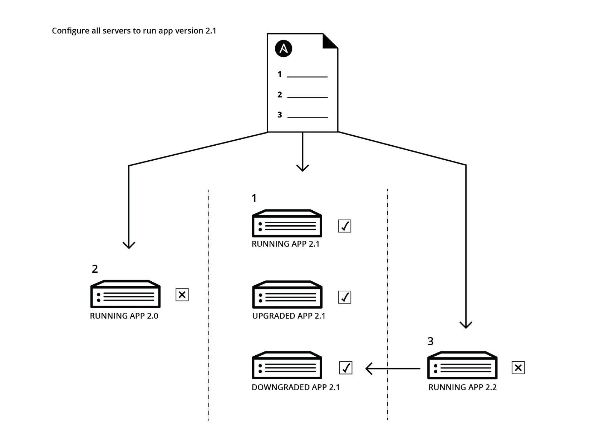
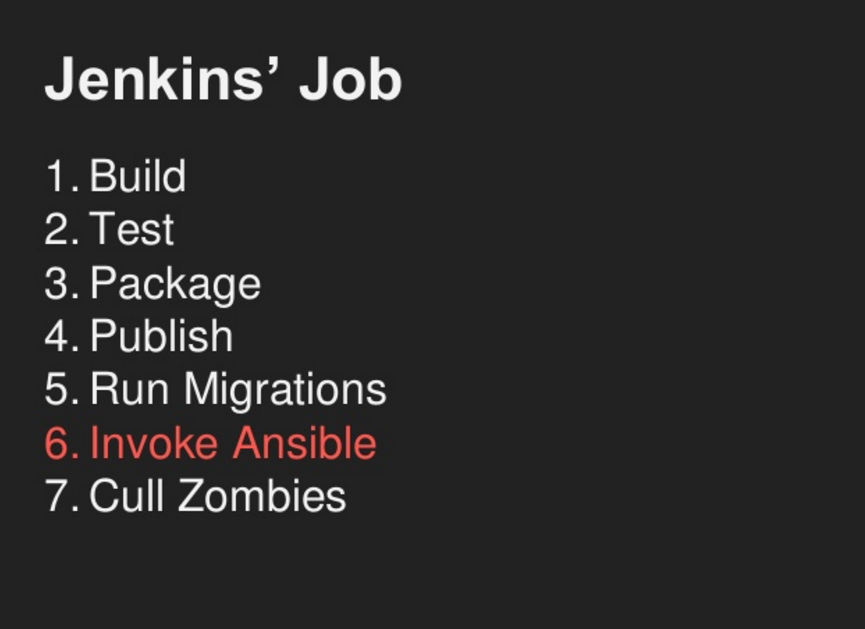

What is Cycle?
Simple, Powerful Machine !!
Created by Shubh Nabira
Student, 2nd G
BGS NPS, Bangalore, India
Agenda
What is cycle?
Use of cycles
Parts of cycle
How I use it?
How you use it ?
Different types of Cycles?
Quotes on cycles
Once upon a time
Datacenters were simple
One server, one OS, one service
we had shell scripts
and ssh loops
Then it all got complicated
Today’s IT brings complex deployments and complex challenges. You’ve got to deal with clustered applications, multiple datacenters, public, private and hybrid clouds and applications with complex dependencies. You need a tool that can orchestrate your complex tasks simply. You need Ansible.
This is what we all need

Install, Configure Apache through playbook

Install, Configure Apache Ad-Hoc

Install, Configure Apache Ad-Hoc

Welcome to Ansible
Zero to Prod in minutes !!!
Automation should not require any programming experience
It must be EASY
Automation for Everyone.
It works with
Unix
Linux
Windows
Docker Containers
Virtualization platforms
Network routers,switches,Firewalls,etc
Openstack Cloud,AWS, Azure, Google,Rackspace etc
Most of the stuff you need is already built-in
Use Cases for Ansible
Provisioning
Configuration Management
Application deployment
Continuous Integration
Orchestration
Security and Compliance
### Security is hard !!!
Application Security
Network Security
Penetration testing
Forensics
Fraud Detection and prevention
Governance, Risk, Complaince
Fix empty root password
Change Password every 60 days
Shell Shock vernerability Check
Stop vernerable services
Change kernel parameters and reboot
Collect log files in central location
Remove venerable packages and replace them with secure ones
Keep check on directory for change
MySQL DB provisioning example
What all things you do after your Linux VM is provisioned
- Change OS parameters to suit DB
- Install database
- Change configuation file for DB
- Enable and start DB
- Setup Backup script for DB
- Setup cronjob for scheduling backup
- Get the list of users
- Get the list of databases
- Remove test DB
- Add new DB
MySQL DB provisioning example
11. Setup new users
12. Setup permissions for users on DB
13. Disable remote login for DB
14. Setup root password for DB
15. Setup replication for DB
16. Check master and slave status for DB
17. Start replication
Automation for everyone
Deploy Apps, manage systems, crush complexity
Ansible helps you build a strong foundation for DevOps.
Application Deployment

Configuration Management

Continuous Integration

Integration with Windows
- Gather facts on Windows hosts
- Install and uninstall MSIs
- Enable and disable Windows Features
- Start, stop, and manage Windows services
- Create and manage local users and groups
- Manage Windows packages via the Chocolatey package manager
- Manage and install Windows updates
- Fetch files from remote sites
- Push and execute any PowerShell scripts you write
Competetion
Saltstack
Chef
Puppet
Microsoft SCCM
BMC Control M
CA Client Automation
Shell Scripts
BMC Control M
It's used for batch automation
It can work with Mainframes, Unix, Linux, Windows, OpenVMS
It's in leaders quadrant
Can't work as Devops tool
Proprietary
Expensive
Requires Agent
CA Client Automation
It's used for Client devices automation
It can work with VDI solutions
It gives you software inventory capabilities for desktops
Mainly designed for desktop management
Can't work as Devops tool
Proprietary
Expensive
Ansible Tower
https://ansible.com/tower
- Centralize control with a visual dashboard
- Role-based access control
- Job scheduling
- Graphical inventory management.
- Audit trails
- Association of playbooks with particular Job
- Notifications of job completion
You've freed yourself
Now go & free others
Thank you.